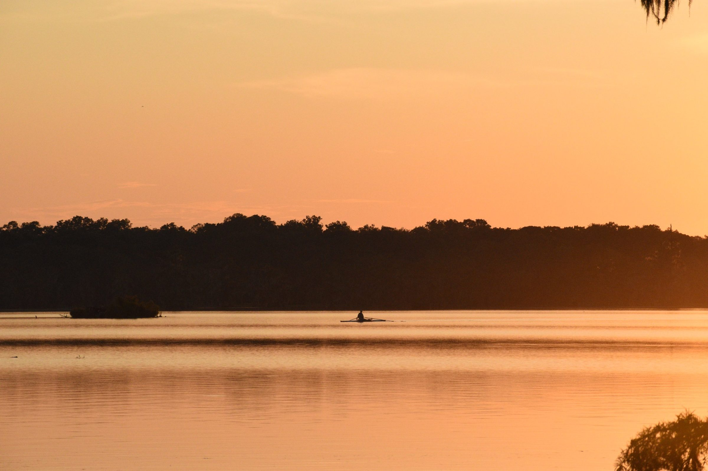
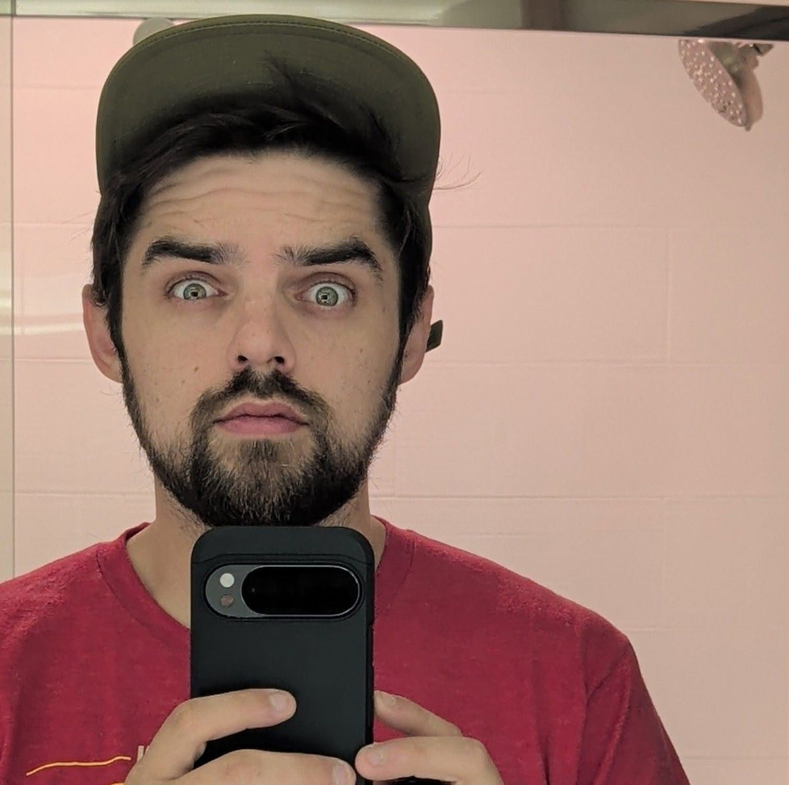

Showroom signage
Branded signage I designed for a multi-location showroom. It’s still in use today.

Organized by trade. Creative by nature.

I’m a creative operations professional from Acadiana with more than 10 years of experience keeping businesses organized and running smoothly, and a lifelong eye for design. At General Office Supply, I ran operations for a multi-location business, helped design the company’s website, and created branded showroom signage that’s still in use. I studied web design at Full Sail University, and I’ve been behind a camera since my yearbook days. Whether it’s a process, a page, or a picture, I like making things work well and look good.
Places, light, and moments that caught my eye.
Branded signage I designed for a multi-location showroom. It’s still in use today.
I spent several weeks designing the full layout for a multi-location distributor’s website. The final build was completed by the company’s web partner.
Brand and website design for an operations consulting concept built around my Seven Pillars framework.
Whether it’s a warehouse, a showroom, or a website, I tend to work the same way.
Before I change anything, I watch how the work actually moves, not just how it’s supposed to.
If a process only works for the person who built it, it isn’t finished. I write it down and keep it simple enough for anyone to pick up.
I build things to keep working without me: clear steps, clear owners, and fewer surprises.
At a multi-location distribution company, I researched and selected a digital proof-of-delivery system to replace paper records. I mapped how it would affect every role from drivers to accounting, worked out problems before launch, and led the team through the switch. Accounting went from five or six people to three, and nobody lost their job.
I later shaped this approach into a framework I call the Seven Pillars. You can see it in the Bay Circle project.